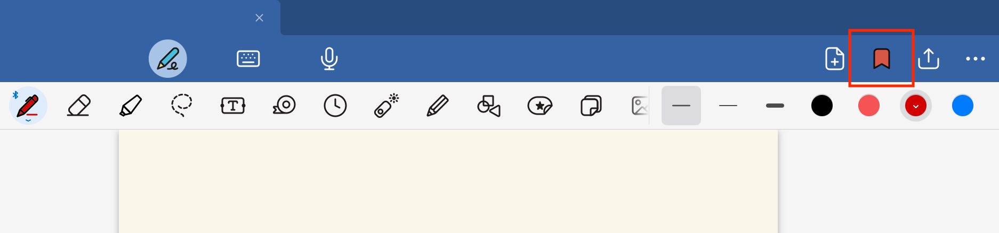
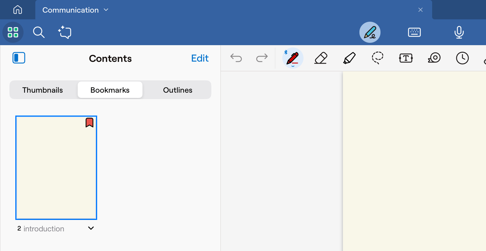
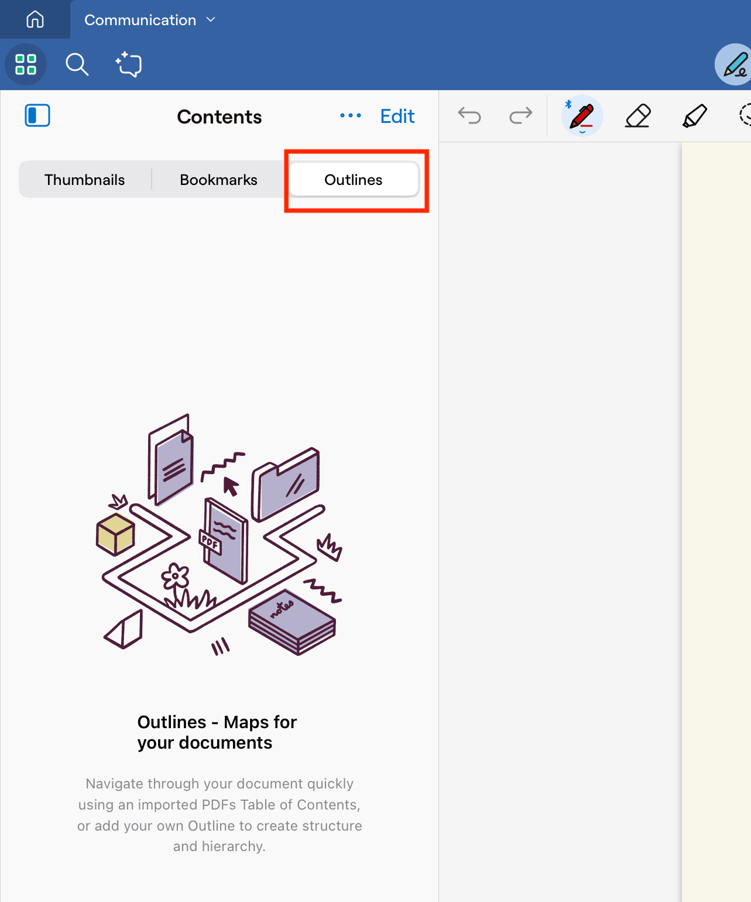
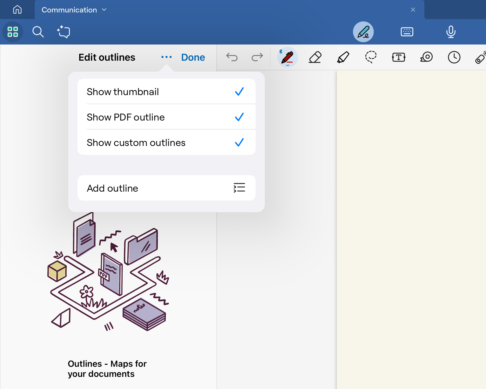

This section guides you through the process of importing a PDF document into GoodNotes and annotating it. This feature is ideal for students, professionals, or anyone who needs to mark up documents effectively.
Use the active annotation tools to mark up your document: Write, highlight, or underline text as needed.
Add Bookmarks

Tap the [Bookmark icon] (represented by a ribbon) on the toolbar to bookmark the current page.

To view or manage bookmarks, open the bookmark sidebar, where all your bookmarks are listed.
View and Add Outlines

If your imported PDF includes a built-in outline, GoodNotes will display it in the sidebar.

If no outline exists, you can manually create one by using the text tool to add a table of contents or annotating a dedicated page to serve as your custom outline.
Tip
Using different colors or pen types for bookmarks and outline entries can help differentiate them and improve document navigation.